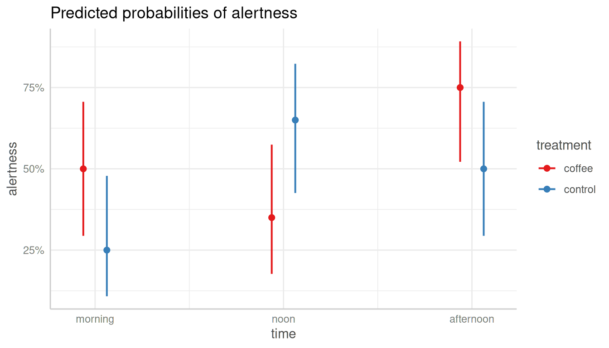

Case Study: Simple Workflow Using Logistic Regression
Source:vignettes/practical_glm_workflow.Rmd
practical_glm_workflow.RmdThis vignette demonstrates a typical workflow using the
ggeffects package, with a logistic regression model as an
example. We will explore various aspects of the model, such as model
coefficients, predicted probabilities, and pairwise comparisons. Let’s
get started!
Preparing the data and fitting a model
First, we load the ggeffects package and the
coffee_data data set, which is included in the package. The
data set contains information on the effect of coffee consumption on
alertness over time. The outcome variable is binary (alertness), and the
predictor variables are coffee consumption (treatment) and time.
library(ggeffects)
library(parameters) # for model summary
library(datawizard) # for recodings
data(coffee_data, package = "ggeffects")
# dichotomize outcome variable
coffee_data$alertness <- categorize(coffee_data$alertness, lowest = 0)
# rename variable
coffee_data$treatment <- coffee_data$coffee
# model
model <- glm(alertness ~ treatment * time, data = coffee_data, family = binomial())Exploring the model - model coefficients
Let’s start by examining the model coefficients. We can use the
model_parameters() function to extract the coefficients
from the model. By setting exponentiate = TRUE, we can
obtain the odds ratios for the coefficients.
# coefficients
model_parameters(model, exponentiate = TRUE)
#> Parameter | Odds Ratio | SE | 95% CI | z | p
#> -----------------------------------------------------------------------------------------------
#> (Intercept) | 1.00 | 0.45 | [0.41, 2.44] | -1.54e-15 | > .999
#> treatment [control] | 0.33 | 0.23 | [0.08, 1.23] | -1.61 | 0.108
#> time [noon] | 0.54 | 0.35 | [0.15, 1.90] | -0.96 | 0.339
#> time [afternoon] | 3.00 | 2.05 | [0.81, 12.24] | 1.61 | 0.108
#> treatment [control] × time [noon] | 10.35 | 9.85 | [1.66, 70.73] | 2.45 | 0.014
#> treatment [control] × time [afternoon] | 1.00 | 0.97 | [0.15, 6.74] | -6.10e-16 | > .999
#>
#> Uncertainty intervals (profile-likelihood) and p-values (two-tailed) computed using a Wald z-distribution approximation.The model coefficients are difficult to interpret directly, in
particular sinc we have an interaction effect. Instead, we should use
the predict_response() function to calculate predicted
probabilities for the model. These refer to the adjusted probabilities
of the outcome (higher alertness) depending on the predictor variables
(treatment and time).
Predicted probabilities - understanding the model
Thus, since we are interested in the interaction effect of coffee
consumption (treatment) on alertness depending on different times of the
day, we simply specify these two variables as focal terms in
the predict_response() function.
# predicted probabilities
predictions <- predict_response(model, c("time", "treatment"))
plot(predictions)
As we can see, the predicted probabilities of alertness are higher for participants who consumed coffee compared to those who did not, but only in the morning and in the afternoon. Furthermore, we see differences between the coffee and the control group at each time point - but are these differences statistically significant?
Pairwise comparisons - testing the differences
To check this, we finally use the test_predictions()
function to perform pairwise comparisons of the predicted probabilities.
We simply pass our results from predict_response() to the
function.
# pairwise comparisons - quite long table
test_predictions(predictions)
#> # Pairwise comparisons
#>
#> time | treatment | Contrast | 95% CI | p
#> ------------------------------------------------------------------------
#> morning-noon | coffee-coffee | 0.15 | -0.15, 0.45 | 0.332
#> morning-afternoon | coffee-coffee | -0.25 | -0.54, 0.04 | 0.091
#> morning-morning | coffee-control | 0.25 | -0.04, 0.54 | 0.091
#> morning-noon | coffee-control | -0.15 | -0.45, 0.15 | 0.332
#> morning-afternoon | coffee-control | 0.00 | -0.31, 0.31 | > .999
#> noon-afternoon | coffee-coffee | -0.40 | -0.68, -0.12 | 0.005
#> noon-morning | coffee-control | 0.10 | -0.18, 0.38 | 0.488
#> noon-noon | coffee-control | -0.30 | -0.60, 0.00 | 0.047
#> noon-afternoon | coffee-control | -0.15 | -0.45, 0.15 | 0.332
#> afternoon-morning | coffee-control | 0.50 | 0.23, 0.77 | < .001
#> afternoon-noon | coffee-control | 0.10 | -0.18, 0.38 | 0.488
#> afternoon-afternoon | coffee-control | 0.25 | -0.04, 0.54 | 0.091
#> morning-noon | control-control | -0.40 | -0.68, -0.12 | 0.005
#> morning-afternoon | control-control | -0.25 | -0.54, 0.04 | 0.091
#> noon-afternoon | control-control | 0.15 | -0.15, 0.45 | 0.332
#>
#> Contrasts are presented as probabilities.In the above output, we see all possible pairwise comparisons of the predicted probabilities. The table is quite long, but we can also group the comparisons, e.g. by the variable time.
# group comparisons by "time"
test_predictions(predictions, by = "time")
#> # Pairwise comparisons
#>
#> time | treatment | Contrast | 95% CI | p
#> ------------------------------------------------------------
#> morning | coffee-control | 0.25 | -0.04, 0.54 | 0.091
#> noon | coffee-control | -0.30 | -0.60, 0.00 | 0.047
#> afternoon | coffee-control | 0.25 | -0.04, 0.54 | 0.091
#>
#> Contrasts are presented as probabilities.The output shows that the differences between the coffee and the control group are statistically significant only in the noon time.